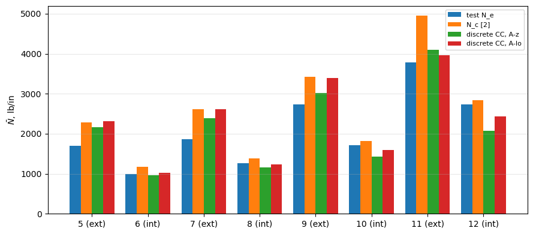
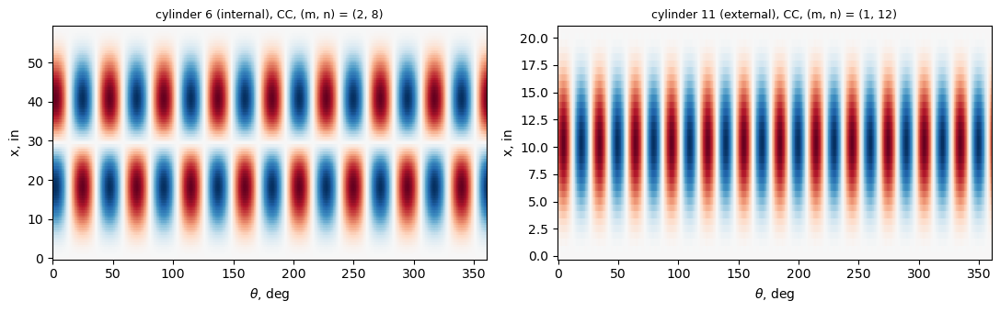
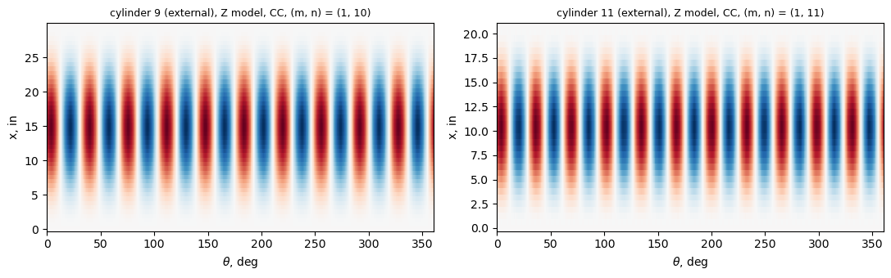

Discrete and smeared stringers: cylinders with riveted Z stringers (Peterson and Dow 1959; Card and Jones 1966)#
Peterson and Dow [1] tested in axial compression 7075-T6 cylinders stiffened by Z-section stringers riveted inside the skin, 1.25 in apart. Card and Jones [2] tested the same cylinders with the stringers outside and list both series in their Table I (p. 7): cylinders 5, 7, 9, 11 (external, [2]) and 6, 8, 10, 12 (internal, [1]), with the test loads and the loads of their smeared-stiffener theory for clamped (\(\bar{N}_c\)) and simply supported (\(\bar{N}_s\)) ends. This notebook models
the cylinders with discrete stringers and compares with these values, to quantify the gap between discrete and smeared stringers at the spacing of 1.25 in (the integral blade cylinders 1 to 4 of [2], 1.0 in apart, are in the notebook card1966_stiffened_cylinder_buckling.ipynb).
A stringer is first represented by one plate strip normal to the skin (a blade). A Z section cannot be represented exactly by one strip; two equivalent blades are used, and both the discrete model and the smeared theory are evaluated for each, so that the discreteness gap (discrete model against the smeared theory of the same blade) is separated from the effect of replacing the Z by a blade (the smeared theory for the blade against the smeared theory for the Z, which reproduces \(\bar{N}_c\) and \(\bar{N}_s\) of [2]). Then the Z is modelled by three plates (attached flange, web, free flange) with the dimensions of [1], and cylinders 1 and 2 of [1] (\(R = 23.74\) in), not computed in [2], are compared with their tests.
[1] J. P. Peterson and M. B. Dow, Compression tests on circular cylinders stiffened longitudinally by closely spaced Z-section stringers, NASA Memo 2-12-59L, March 1959.
[2] M. F. Card and R. M. Jones, Experimental and theoretical results for buckling of eccentrically stiffened cylinders, NASA TN D-3639, October 1966, https://ntrs.nasa.gov/citations/19660027866.
[3] D. L. Block, M. F. Card and M. M. Mikulas, Jr., Buckling of eccentrically stiffened orthotropic cylinders, NASA TN D-2960, 1965, https://ntrs.nasa.gov/citations/19650021133.
[1]:
%matplotlib inline
import time
import numpy as np
import matplotlib.pyplot as plt
from IPython.display import Markdown, display
from scipy.optimize import brentq
from bfsccylinder.version import __version__ as bfsccylinder_version
from bfscplate2d.version import __version__ as bfscplate2d_version
from blade_cylinder_sector import (BladeCylinderSector, buckling_membrane,
axial_nodes, normalize_phase, W)
from smeared_stiffened_cylinder import buckling_ss, buckling_ritz, minimum
print('bfsccylinder', bfsccylinder_version)
print('bfscplate2d', bfscplate2d_version)
def pct(value, ref):
return 100*(value/ref - 1)
def table(header, rows):
out = ['| ' + ' | '.join(header) + ' |', '|' + '---|'*len(header)]
out += ['| ' + ' | '.join(str(c) for c in row) + ' |' for row in rows]
display(Markdown('\n'.join(out)))
bfsccylinder 0.7.1
bfscplate2d 0.5.0
Cylinders, geometry and material#
Table I(a) of [2] (p. 7): skin thickness \(t\), length \(L\), radius \(R = 15.92\) in, measured area \(A_t\), test load \(\bar{P}_e\), circumferential waves \(n_e\), and \(\bar{N}_e\), \(\bar{N}_c\), \(\bar{N}_s\) (headed kips/in., in lb/in: \(\bar{P}_e/(2\pi R)\) gives \(\bar{N}_e\) in lb/in). \(E = 10.5 \times 10^3\) ksi, \(\mu = 0.32\) (footnote). Stringer spacing 1.25 in (Fig. 2(a)), that is \(2\pi R/1.25 = 80.0\): 80 stringers. The ends were ground flat and loaded between the platens (p. 6 of [2], p. 4 of [1]): clamped. In [1] (Table I, p. 11) the same cylinders have \(R = 15.80\) in and \(E = 10\,900\) ksi (p. 4); Card and Jones’ values use \(R = 15.92\) in and \(E = 10\,500\) ksi, which are used here. Correspondence: cylinders 6, 8, 10, 12 of [2] are 6, 5, 3, 4 of [1].
[2]:
E = 10.5e6 # psi
mu = 0.32
R = 15.92 # in
NS = 80
d = 2*np.pi*R/NS
# Table I(a) of [2], p. 7: side, t, L (in), A_t (in^2), P_e (kips), n_e, N_e, N_c, N_s (lb/in)
CYL = {5: ('external', .0410, 59.00, 7.15, 169.6, 5, 1696, 2289, 1193),
6: ('internal', .0401, 59.00, 7.25, 99.5, 6, 995, 1174, 766),
7: ('external', .0391, 41.83, 7.02, 186.3, 7, 1863, 2617, 1283),
8: ('internal', .0401, 41.83, 7.31, 126.0, 6, 1260, 1383, 773),
9: ('external', .0392, 29.68, 7.06, 273.0, 7, 2730, 3426, 1574),
10: ('internal', .0403, 29.68, 7.21, 171.0, 7, 1710, 1813, 838),
11: ('external', .0395, 20.77, 7.18, 378.0, 8, 3780, 4947, 2068),
12: ('internal', .0401, 20.77, 7.18, 273.0, 8, 2730, 2845, 1027)}
PETERSON = {6: 6, 8: 5, 10: 3, 12: 4} # cylinder of [2]: specimen of [1]
print('stringer spacing %.4f in' % d)
rows = []
for c, (side, t, L, At, Pe, ne, Ne, Nc, Ns) in CYL.items():
rows.append([c, PETERSON.get(c, '-'), side, t, L, At, Pe, ne,
'%.0f (%d)' % (Pe*1e3/(2*np.pi*R), Ne), Nc, Ns])
table(['cyl. [2]', 'specimen [1]', 'stringers', 't, in', 'L, in', 'A_t, in^2', 'P_e, kips',
'n_e', 'P_e/(2 pi R), lb/in (N_e)', 'N_c', 'N_s'], rows)
stringer spacing 1.2504 in
cyl. [2] |
specimen [1] |
stringers |
t, in |
L, in |
A_t, in^2 |
P_e, kips |
n_e |
P_e/(2 pi R), lb/in (N_e) |
N_c |
N_s |
|---|---|---|---|---|---|---|---|---|---|---|
5 |
external |
0.041 |
59.0 |
7.15 |
169.6 |
5 |
1696 (1696) |
2289 |
1193 |
|
6 |
6 |
internal |
0.0401 |
59.0 |
7.25 |
99.5 |
6 |
995 (995) |
1174 |
766 |
7 |
external |
0.0391 |
41.83 |
7.02 |
186.3 |
7 |
1862 (1863) |
2617 |
1283 |
|
8 |
5 |
internal |
0.0401 |
41.83 |
7.31 |
126.0 |
6 |
1260 (1260) |
1383 |
773 |
9 |
external |
0.0392 |
29.68 |
7.06 |
273.0 |
7 |
2729 (2730) |
3426 |
1574 |
|
10 |
3 |
internal |
0.0403 |
29.68 |
7.21 |
171.0 |
7 |
1710 (1710) |
1813 |
838 |
11 |
external |
0.0395 |
20.77 |
7.18 |
378.0 |
8 |
3779 (3780) |
4947 |
2068 |
|
12 |
4 |
internal |
0.0401 |
20.77 |
7.18 |
273.0 |
8 |
2729 (2730) |
2845 |
1027 |
The Z section#
Fig. 2(a) of [2] (p. 6) and Fig. 2(b) of [1] (p. 12): formed sheet 0.040 in thick, bend radius 0.04 in, depth 0.54 in from the skin surface to the outer face of the free flange, attached flange 0.375 in ([1]: 0.38 in) and free flange 0.22 in, both overall from the face of the web, 3/32-in rivets at 5/16 in pitch, 0.19 in from the web. “All dimensions are nominal except \(A_t\)” ([2], p. 5). Two readings: square corners (three rectangles), and the centre line of the sheet with the two bends
of inner radius 0.04 in (thin walls). The table gives the section and \(A_t\) computed with it (skin, 80 stringers; the three lap joints of [2], 3/4 in wide, are left out) and the smeared theory of [3] with each reading: equation (15) (simply supported, buckling_ss, minimum over \(m \le 12\), \(n \le 40\)) and the Galerkin solution of [2] for clamped ends (buckling_ritz, 16 terms, minimum over \(n\)), against \(\bar{N}_s\) and \(\bar{N}_c\);
\(J = \sum b t^3/3\).
[3]:
TZ, RB, HZ, BB, BT = 0.040, 0.04, 0.54, 0.375, 0.22
def z_section(t, side, bends):
# centre line of the Z, z from the skin surface: list of (length, z)
# pieces; area, centroid, moment of inertia about the centroid, J
pieces = []
zb, zt = TZ/2, HZ - TZ/2
if bends:
rc = RB + TZ/2
pieces.append((BB - TZ/2 - rc, zb))
for a in np.linspace(0, np.pi/2, 41)[:-1] + np.pi/160:
pieces.append((rc*np.pi/80, zb + rc - rc*np.cos(a)))
lw = zt - zb - 2*rc
k = 40
for z in zb + rc + (np.arange(k) + 0.5)*lw/k:
pieces.append((lw/k, z))
for a in np.linspace(0, np.pi/2, 41)[:-1] + np.pi/160:
pieces.append((rc*np.pi/80, zt - rc + rc*np.sin(a)))
pieces.append((BT - TZ/2 - rc, zt))
ds = np.array([p[0] for p in pieces])
z = np.array([p[1] for p in pieces])
A = TZ*ds.sum()
zc = (TZ*ds*z).sum()/A
Ic = (TZ*ds*(z - zc)**2).sum() + TZ**3/12*(BB + BT)
J = ds.sum()*TZ**3/3
else:
rects = [(BB, TZ, 0.), (TZ, HZ - 2*TZ, TZ), (BT, TZ, HZ - TZ)]
A = sum(w*h for w, h, z0 in rects)
zc = sum(w*h*(z0 + h/2) for w, h, z0 in rects)/A
Ic = sum(w*h**3/12 + w*h*(z0 + h/2 - zc)**2 for w, h, z0 in rects)
J = sum(max(w, h)*min(w, h)**3/3 for w, h, z0 in rects)
sign = 1. if side == 'external' else -1.
z = sign*(t/2 + zc)
return dict(A=A, zc=zc, z=z, Ic=Ic, Io=Ic + A*z**2, J=J)
mgrid = np.arange(1, 13)[:, None]
ngrid = np.arange(1, 41)[None, :]
def smeared_ss(t, L, s):
N = buckling_ss(R, L, t, E, mu, d, s['A'], s['z'], s['Io'], s['J'], mgrid, ngrid)
i, j = np.unravel_index(np.argmin(N), N.shape)
return N[i, j], (int(mgrid[i, 0]), int(ngrid[0, j]))
def smeared_cc(t, L, s):
return minimum(lambda n: buckling_ritz(R, L, t, E, mu, d, s['A'], s['z'], s['Io'],
s['J'], n, 'CC', 16)[0], range(2, 31))
rows = []
SM = {}
for bends in (False, True):
s = z_section(0.04, 'external', bends)
print('%s: A = %.5f in^2, centroid %.4f in above the skin, I_c = %.4e in^4, J = %.3e in^4'
% ('bends' if bends else 'square corners', s['A'], s['zc'], s['Ic'], s['J']))
for c, (side, t, L, At, Pe, ne, Ne, Nc, Ns) in CYL.items():
row = [c, side]
for bends in (False, True):
s = z_section(t, side, bends)
Nss, mn = smeared_ss(t, L, s)
Ncc, n = smeared_cc(t, L, s)
SM[(c, bends)] = (Ncc, n, Nss, mn)
row += ['%+.1f %%' % pct(2*np.pi*R*t + NS*s['A'], At),
'%.0f (n = %d), %+.1f %%' % (Ncc, n, pct(Ncc, Nc)),
'%.0f %s, %+.1f %%' % (Nss, mn, pct(Nss, Ns))]
rows.append(row)
table(['cyl.', 'stringers', 'square: A_t', 'square: CC vs N_c', 'square: SS vs N_s',
'bends: A_t', 'bends: CC vs N_c', 'bends: SS vs N_s'], rows)
square corners: A = 0.04220 in^2, centroid 0.2333 in above the skin, I_c = 1.7582e-03 in^4, J = 2.251e-05 in^4
bends: A = 0.04014 in^2, centroid 0.2314 in above the skin, I_c = 1.6088e-03 in^4, J = 2.141e-05 in^4
cyl. |
stringers |
square: A_t |
square: CC vs N_c |
square: SS vs N_s |
bends: A_t |
bends: CC vs N_c |
bends: SS vs N_s |
|---|---|---|---|---|---|---|---|
5 |
external |
+4.6 % |
2350 (n = 7), +2.7 % |
1220 (1, 6), +2.2 % |
+2.3 % |
2281 (n = 7), -0.3 % |
1193 (1, 6), -0.0 % |
6 |
internal |
+1.9 % |
1201 (n = 8), +2.3 % |
769 (1, 6), +0.4 % |
-0.4 % |
1169 (n = 8), -0.4 % |
765 (1, 6), -0.2 % |
7 |
external |
+3.8 % |
2702 (n = 9), +3.3 % |
1319 (1, 7), +2.8 % |
+1.5 % |
2608 (n = 9), -0.4 % |
1281 (1, 7), -0.1 % |
8 |
internal |
+1.1 % |
1411 (n = 8), +2.0 % |
780 (1, 7), +0.9 % |
-1.2 % |
1379 (n = 8), -0.3 % |
772 (1, 7), -0.1 % |
9 |
external |
+3.4 % |
3568 (n = 10), +4.1 % |
1624 (1, 9), +3.2 % |
+1.0 % |
3417 (n = 10), -0.3 % |
1572 (1, 9), -0.1 % |
10 |
internal |
+2.7 % |
1877 (n = 9), +3.5 % |
851 (1, 8), +1.6 % |
+0.4 % |
1808 (n = 9), -0.3 % |
836 (1, 8), -0.2 % |
11 |
external |
+2.0 % |
5194 (n = 11), +5.0 % |
2155 (1, 10), +4.2 % |
-0.2 % |
4940 (n = 11), -0.1 % |
2066 (1, 10), -0.1 % |
12 |
internal |
+2.9 % |
2985 (n = 10), +4.9 % |
1060 (1, 9), +3.2 % |
+0.6 % |
2834 (n = 10), -0.4 % |
1025 (1, 9), -0.2 % |
The reading with the bends reproduces \(\bar{N}_c\) and \(\bar{N}_s\) of [2] more closely and is the Z section used below. Card and Jones do not print the section properties they used; the remaining differences (above 1 % for the shorter cylinders) are not explained by these two readings.
Equivalent blades#
A blade of thickness \(t_b\) and height \(h_b\) standing on the skin has two parameters, so it can match two of the properties of the Z. Two blades:
blade A-z: same area \(A\) and same centroid (\(h_b = 2 z_c\), \(t_b = A/h_b\));
blade A-Io: same area and same moment of inertia \(I_o\) about the middle surface of the skin (the bending stiffness of the stringer with its eccentricity).
In the discrete model the blade is the plate strip from the middle surface of the skin to its tip, of width \(H_s = h_b + t/2\), with \(D_{66}\) scaled so that its twisting stiffness \(4 D_{66} H_s\) equals \(G J\) of the Z. The smeared theory of the strip as modelled (\(A = t_b H_s\), \(\bar{z} = \pm H_s/2\), \(I_o = t_b H_s^3/3\), \(J\) of the Z) is the reference of the discreteness gap.
[4]:
def blades(t, side):
z = z_section(t, side, True)
sign = 1. if side == 'external' else -1.
out = {}
hb = 2*z['zc']
out['A-z'] = (z['A']/hb, hb)
f = lambda hb: (z['A']/hb*hb**3/12 + z['A']*((t + hb)/2)**2) - z['Io']
hb = brentq(f, 0.05, 2.)
out['A-Io'] = (z['A']/hb, hb)
strips = {}
for k, (tb, hb) in out.items():
Hs = hb + t/2
strips[k] = dict(tb=tb, hb=hb, Hs=Hs, A=tb*Hs, z=sign*Hs/2, Io=tb*Hs**3/3,
J=z['J'], Jplate=Hs*tb**3/3)
return strips
rows = []
STRIPS = {}
for c, (side, t, L, At, Pe, ne, Ne, Nc, Ns) in CYL.items():
STRIPS[c] = blades(t, side)
zc_cc, _, zc_ss, _ = SM[(c, True)]
for k, s in STRIPS[c].items():
Ncc, n = smeared_cc(t, L, s)
Nss, mn = smeared_ss(t, L, s)
s['sm'] = (Ncc, n, Nss, mn)
rows.append([c, side, k, '%.4f x %.4f' % (s['tb'], s['hb']), '%.2f' % (s['J']/s['Jplate']),
'%.0f (n = %d), %+.1f %%' % (Ncc, n, pct(Ncc, zc_cc)),
'%.0f %s, %+.1f %%' % (Nss, mn, pct(Nss, zc_ss))])
table(['cyl.', 'stringers', 'blade', 't_b x h_b, in', 'J_Z/J_plate',
'smeared CC, strip vs Z', 'smeared SS, strip vs Z'], rows)
cyl. |
stringers |
blade |
t_b x h_b, in |
J_Z/J_plate |
smeared CC, strip vs Z |
smeared SS, strip vs Z |
|---|---|---|---|---|---|---|
5 |
external |
A-z |
0.0867 x 0.4628 |
0.20 |
2202 (n = 7), -3.5 % |
1178 (1, 6), -1.2 % |
5 |
external |
A-Io |
0.0763 x 0.5263 |
0.26 |
2345 (n = 7), +2.8 % |
1223 (1, 6), +2.5 % |
6 |
internal |
A-z |
0.0867 x 0.4628 |
0.20 |
1006 (n = 8), -13.9 % |
750 (1, 6), -1.9 % |
6 |
internal |
A-Io |
0.0763 x 0.5263 |
0.27 |
1076 (n = 8), -7.9 % |
745 (1, 6), -2.5 % |
7 |
external |
A-z |
0.0867 x 0.4628 |
0.20 |
2435 (n = 9), -6.6 % |
1245 (1, 7), -2.8 % |
7 |
external |
A-Io |
0.0762 x 0.5264 |
0.27 |
2667 (n = 9), +2.3 % |
1320 (1, 7), +3.0 % |
8 |
internal |
A-z |
0.0867 x 0.4628 |
0.20 |
1213 (n = 8), -12.0 % |
737 (1, 7), -4.6 % |
8 |
internal |
A-Io |
0.0763 x 0.5263 |
0.27 |
1285 (n = 8), -6.8 % |
742 (1, 7), -3.9 % |
9 |
external |
A-z |
0.0867 x 0.4628 |
0.20 |
3079 (n = 10), -9.9 % |
1492 (1, 9), -5.1 % |
9 |
external |
A-Io |
0.0763 x 0.5264 |
0.27 |
3473 (n = 10), +1.6 % |
1612 (1, 9), +2.5 % |
10 |
internal |
A-z |
0.0867 x 0.4628 |
0.20 |
1484 (n = 9), -17.9 % |
760 (1, 8), -9.1 % |
10 |
internal |
A-Io |
0.0763 x 0.5263 |
0.26 |
1661 (n = 9), -8.1 % |
788 (1, 8), -5.7 % |
11 |
external |
A-z |
0.0867 x 0.4628 |
0.20 |
4252 (n = 11), -13.9 % |
1898 (1, 10), -8.1 % |
11 |
external |
A-Io |
0.0763 x 0.5264 |
0.27 |
4948 (n = 11), +0.2 % |
2117 (1, 10), +2.5 % |
12 |
internal |
A-z |
0.0867 x 0.4628 |
0.20 |
2168 (n = 10), -23.5 % |
863 (1, 9), -15.8 % |
12 |
internal |
A-Io |
0.0763 x 0.5263 |
0.27 |
2580 (n = 10), -9.0 % |
946 (1, 9), -7.7 % |
Model with discrete stringers#
BladeCylinderSector (one stringer pitch with cyclic symmetry, skin BFSCCylinderSanders, stringer BFSCPlate2D tied along its root), the membrane pre-buckling state of the smeared theory, both ends clamped ('CC': \(u = v = w = w_{,x} = 0\), skin and stringer) or simply supported ('SS': \(v
= w = 0\), \(u\) free), each harmonic \(n = 1 \ldots 20\) solved separately (the general modes of the test cylinders have \(n_e = 5\) to 8). The rivets, the attached flange (which stiffens the skin locally) and the lap joints are not represented.
[5]:
def build(c, mesh, blade):
side, t, L = CYL[c][:3]
s = STRIPS[c][blade]
per_inch, nbay, nh = mesh
model = BladeCylinderSector(R=R, L=L, h=t, E=E, nu=mu, rho=0., nstringers=NS,
nx=int(round(per_inch*L)) + 1, nbay=nbay, bs=s['tb'],
Hs=s['Hs'], side=side, nh=nh)
ABD = np.array(model.str_prop.ABD, dtype=float)
ABD[5, 5] *= s['J']/s['Jplate']
for plate in model.str_elements:
plate.ABD = ABD
return model
def scan(c, mesh, blade, ends, ns=range(1, 21)):
model = build(c, mesh, blade)
out = {}
for n in ns:
N, X = buckling_membrane(model, ends, n, k=1)
out[n] = (N[0], axial_nodes(model, X[:, 0]) + 1, X[:, 0])
n = min(out, key=lambda n: out[n][0])
return model, out, n
Mesh convergence#
Meshes (nodes per inch along x, skin elements across the pitch, stringer elements along the height), the longest and the shortest cylinder, blade A-z.
[6]:
MESHES = [(0.6, 4, 2), (1.0, 6, 3), (1.6, 8, 4)]
t0 = time.time()
rows = []
for c in (6, 11):
for ends in ('CC', 'SS'):
prev = None
for mesh in MESHES:
model, out, n = scan(c, mesh, 'A-z', ends)
N, m, _ = out[n]
rows.append([c, ends, mesh, model.Nr, '%.1f' % N, '(%d, %d)' % (m, n),
'' if prev is None else '%+.2f %%' % pct(N, prev)])
prev = N
table(['cyl.', 'ends', 'mesh', 'dofs per harmonic', 'N_cr, lb/in', '(m, n)', 'change'], rows)
print('%.0f s' % (time.time() - t0))
cyl. |
ends |
mesh |
dofs per harmonic |
N_cr, lb/in |
(m, n) |
change |
|---|---|---|---|---|---|---|
6 |
CC |
(0.6, 4, 2) |
2232 |
979.4 |
(2, 8) |
|
6 |
CC |
(1.0, 6, 3) |
5520 |
970.5 |
(2, 8) |
-0.91 % |
6 |
CC |
(1.6, 8, 4) |
11590 |
967.6 |
(2, 8) |
-0.30 % |
6 |
SS |
(0.6, 4, 2) |
2232 |
708.2 |
(1, 6) |
|
6 |
SS |
(1.0, 6, 3) |
5520 |
704.4 |
(1, 6) |
-0.54 % |
6 |
SS |
(1.6, 8, 4) |
11590 |
703.1 |
(1, 6) |
-0.18 % |
11 |
CC |
(0.6, 4, 2) |
806 |
4154.9 |
(1, 12) |
|
11 |
CC |
(1.0, 6, 3) |
2024 |
4116.6 |
(1, 12) |
-0.92 % |
11 |
CC |
(1.6, 8, 4) |
4148 |
4105.4 |
(1, 12) |
-0.27 % |
11 |
SS |
(0.6, 4, 2) |
806 |
1883.3 |
(1, 10) |
|
11 |
SS |
(1.0, 6, 3) |
2024 |
1873.6 |
(1, 10) |
-0.52 % |
11 |
SS |
(1.6, 8, 4) |
4148 |
1870.7 |
(1, 10) |
-0.15 % |
573 s
Local buckling of the skin. The harmonic \(n = 40\) contains the modes with one half-wave of the skin per bay; with 4 nodes per inch, for the cylinders with the highest stresses at buckling (9, 11) and the longest (5):
[7]:
t0 = time.time()
rows = []
for c in (5, 9, 11):
for ends in ('CC',):
model, out, n = scan(c, (4.0, 8, 4), 'A-z', ends, ns=[40])
rows.append([c, ends, '%.0f (m = %d)' % (out[40][0], out[40][1]), CYL[c][7]])
table(['cyl.', 'ends', 'n = 40, lb/in', 'N_c [2]'], rows)
print('%.0f s' % (time.time() - t0))
cyl. |
ends |
n = 40, lb/in |
N_c [2] |
|---|---|---|---|
5 |
CC |
3615 (m = 32) |
2289 |
9 |
CC |
3373 (m = 16) |
3426 |
11 |
CC |
3424 (m = 11) |
4947 |
33 s
Discrete against smeared stringers and the tests#
Finest mesh. “gap” is the discrete model against the smeared theory of the same strip; the last columns compare with the values of [2] for the Z.
[8]:
t0 = time.time()
RES = {}
for c in CYL:
for blade in ('A-z', 'A-Io'):
for ends in ('CC', 'SS'):
RES[(c, blade, ends)] = scan(c, MESHES[-1], blade, ends)
print('%.0f s' % (time.time() - t0))
rows = []
for c, (side, t, L, At, Pe, ne, Ne, Nc, Ns) in CYL.items():
for blade in ('A-z', 'A-Io'):
s = STRIPS[c][blade]
Ncc_s, _, Nss_s, _ = s['sm']
model, out, n = RES[(c, blade, 'CC')]
Ncc = out[n][0]
mcc = (out[n][1], n)
model, out, n = RES[(c, blade, 'SS')]
Nss = out[n][0]
mss = (out[n][1], n)
rows.append([c, side, blade, '%.0f %s' % (Ncc, mcc), '**%+.1f %%**' % pct(Ncc, Ncc_s),
'%+.1f %%' % pct(Ncc, Nc), '%+.1f %%' % pct(Ncc, Ne),
'%.0f %s' % (Nss, mss), '**%+.1f %%**' % pct(Nss, Nss_s), '%+.1f %%' % pct(Nss, Ns)])
table(['cyl.', 'stringers', 'blade', 'discrete CC (m, n)', 'gap CC', 'vs N_c', 'vs N_e (test)',
'discrete SS (m, n)', 'gap SS', 'vs N_s'], rows)
3374 s
cyl. |
stringers |
blade |
discrete CC (m, n) |
gap CC |
vs N_c |
vs N_e (test) |
discrete SS (m, n) |
gap SS |
vs N_s |
|---|---|---|---|---|---|---|---|---|---|
5 |
external |
A-z |
2166 (1, 7) |
-1.6 % |
-5.4 % |
+27.7 % |
1146 (1, 6) |
-2.7 % |
-3.9 % |
5 |
external |
A-Io |
2307 (1, 7) |
-1.6 % |
+0.8 % |
+36.0 % |
1191 (1, 6) |
-2.6 % |
-0.2 % |
6 |
internal |
A-z |
968 (2, 8) |
-3.9 % |
-17.6 % |
-2.8 % |
703 (1, 6) |
-6.3 % |
-8.2 % |
6 |
internal |
A-Io |
1030 (2, 8) |
-4.3 % |
-12.2 % |
+3.5 % |
696 (1, 6) |
-6.6 % |
-9.1 % |
7 |
external |
A-z |
2396 (1, 9) |
-1.6 % |
-8.4 % |
+28.6 % |
1225 (1, 7) |
-1.6 % |
-4.5 % |
7 |
external |
A-Io |
2619 (1, 9) |
-1.8 % |
+0.1 % |
+40.6 % |
1299 (1, 7) |
-1.6 % |
+1.2 % |
8 |
internal |
A-z |
1164 (1, 8) |
-4.1 % |
-15.9 % |
-7.7 % |
699 (1, 7) |
-5.2 % |
-9.6 % |
8 |
internal |
A-Io |
1227 (1, 8) |
-4.5 % |
-11.3 % |
-2.6 % |
701 (1, 7) |
-5.5 % |
-9.3 % |
9 |
external |
A-z |
3019 (1, 10) |
-2.0 % |
-11.9 % |
+10.6 % |
1471 (1, 9) |
-1.4 % |
-6.6 % |
9 |
external |
A-Io |
3391 (1, 10) |
-2.4 % |
-1.0 % |
+24.2 % |
1587 (1, 9) |
-1.5 % |
+0.8 % |
10 |
internal |
A-z |
1427 (1, 9) |
-3.8 % |
-21.3 % |
-16.6 % |
727 (1, 8) |
-4.3 % |
-13.3 % |
10 |
internal |
A-Io |
1587 (1, 9) |
-4.4 % |
-12.5 % |
-7.2 % |
751 (1, 8) |
-4.7 % |
-10.3 % |
11 |
external |
A-z |
4105 (1, 12) |
-3.5 % |
-17.0 % |
+8.6 % |
1871 (1, 10) |
-1.5 % |
-9.5 % |
11 |
external |
A-Io |
3963 (13, 20) |
-19.9 % |
-19.9 % |
+4.8 % |
2081 (1, 10) |
-1.7 % |
+0.6 % |
12 |
internal |
A-z |
2072 (1, 10) |
-4.4 % |
-27.2 % |
-24.1 % |
831 (1, 9) |
-3.8 % |
-19.1 % |
12 |
internal |
A-Io |
2438 (1, 10) |
-5.5 % |
-14.3 % |
-10.7 % |
906 (1, 9) |
-4.2 % |
-11.8 % |
[9]:
fig, ax = plt.subplots(figsize=(9, 4))
cs = list(CYL)
x = np.arange(len(cs))
vals = {'test N_e': [CYL[c][6] for c in cs], 'N_c [2]': [CYL[c][7] for c in cs],
'discrete CC, A-z': [RES[(c, 'A-z', 'CC')][1][RES[(c, 'A-z', 'CC')][2]][0] for c in cs],
'discrete CC, A-Io': [RES[(c, 'A-Io', 'CC')][1][RES[(c, 'A-Io', 'CC')][2]][0] for c in cs]}
for k, (name, v) in enumerate(vals.items()):
ax.bar(x + (k - 1.5)*0.2, v, 0.2, label=name)
ax.set_xticks(x)
ax.set_xticklabels(['%d (%s)' % (c, CYL[c][0][:3]) for c in cs])
ax.set_ylabel(r'$\bar{N}$, lb/in')
ax.legend(fontsize=8)
ax.grid(axis='y', alpha=0.3)
plt.tight_layout()
plt.show()
fig, axes = plt.subplots(1, 2, figsize=(11, 3.5))
for ax, c in zip(axes, (6, 11)):
model, out, n = RES[(c, 'A-z', 'CC')]
w = normalize_phase(model.skin_field(out[n][2], W))
th, wf = model.full_circumference(w, n)
ax.pcolormesh(np.degrees(th), model.xlin, wf/np.abs(wf).max(), cmap='RdBu_r',
vmin=-1, vmax=1, shading='auto')
ax.set_xlabel(r'$\theta$, deg')
ax.set_ylabel('x, in')
ax.set_title('cylinder %d (%s), CC, (m, n) = (%d, %d)' % (c, CYL[c][0], out[n][1], n), fontsize=9)
plt.tight_layout()
plt.show()


Z stringers as three plates#
The Z is now assembled from three plates of the sheet thickness instead of an equivalent blade, with the module z_cylinder_sector.py next to this notebook (ZCylinderSector, also used for the cylinders 1 and 2 below):
the attached flange is bonded continuously to the skin: the skin elements under it have the stiffnesses of the two-layer laminate skin + flange, referred to the middle surface of the skin (the rivets are not represented);
the web is a
BFSCPlate2Dstrip normal to the skin, tied to it along its root like the blade, from the middle surface of the skin to the middle surface of the free flange (it overlaps skin and flange over \(t/2 + t_z/2\));the free flange is a
BFSCPlate2Dstrip normal to the web, tied to its tip by a rigid corner, on the side opposite to the attached flange.
The Z has no plane of symmetry through the axis, which the cyclic symmetry of one pitch does not need. Only the dimensions of Peterson and Dow [1] (Fig. 2(b), p. 12) are used: sheet 0.040 in, attached flange 0.38 in and free flange 0.22 in overall from the outer face of the web, depth 0.54 in from the skin to the outer face of the free flange, inner bend radius 0.04 in (dimensioned at the bend of the free flange; the bend of the attached flange is drawn rounded without a dimension). The plates are the middle lines of the sheet with square corners; the variant bends shortens each flange by \((2 - \pi/2) r_c\), \(r_c = 0.04 + t_z/2\) in, the length saved by a bend of 90 degrees (both bends, a sensitivity study for the undimensioned one). The Z of the cells above follows Card and Jones [2] (attached flange 0.375 in, centre line with the bends).
The smeared reference of the gap is equation (15) of [3] (simply supported) and the Galerkin solution of [2] (clamped) for the section as modelled (section_properties: area, centroid and \(I_o\) of the three plates with the overlap of the web, \(J = \sum b t_z^3/3\)). Peterson and Dow weighed the cylinders (Table I, p. 11): \((A - 2\pi R t_s)/80\) gives the area of one stringer, splices included.
[10]:
from z_cylinder_sector import ZCylinderSector, z_midlines, section_properties, scan
TZ_P, BF_P, DEPTH_P, BT_P, RB_P = 0.040, 0.38, 0.54, 0.22, 0.04
# Table I of [1], p. 11: specimen: t_s, l, R (in), A (in^2), P_cr (kips), waves (p. 9)
PET = {1: (.0395, 25.40, 23.74, 10.80, 270., '9 -> 10'), 2: (.0395, 19.28, 23.74, 10.80, 413., '11'),
3: (.0403, 29.68, 15.80, 7.21, 171., '7'), 4: (.0401, 20.77, 15.80, 7.18, 273., '8'),
5: (.0401, 41.83, 15.80, 7.31, 126., '6 -> 5'), 6: (.0401, 59.00, 15.80, 7.25, 99.5, '6')}
for sp in (3, 4, 5, 6):
ts, l, Rp, A, Pcr, waves = PET[sp]
print('specimen %d of [1]: stringer area from the weighed A, (A - 2 pi R t_s)/80 = %.4f in^2'
% (sp, (A - 2*np.pi*Rp*ts)/80))
ZSEC = {}
rows = []
for c, (side, t, L, At, Pe, ne, Ne, Nc, Ns) in CYL.items():
for variant, rb in (('square', 0.), ('bends', RB_P)):
sec = z_midlines(TZ_P, BF_P, DEPTH_P, BT_P, h=t, bend_radius=rb)
p = section_properties(sec, t, E, mu)
sign = 1. if side == 'external' else -1.
s = dict(A=p['A'], z=sign*p['zc'], Io=p['Io'], J=p['J'])
Ncc, n = smeared_cc(t, L, s)
Nss, mn = smeared_ss(t, L, s)
ZSEC[(c, variant)] = dict(sec=sec, prop=p, sm=(Ncc, n, Nss, mn))
if c in (5, 6):
print('%s, t = %.4f in: b_f = %.4f, H_w = %.4f, b_l = %.4f in; A = %.5f in^2, centroid %.4f in from '
'the middle surface of the skin, I_o = %.4e in^4, J = %.3e in^4'
% (variant, t, sec['bf'], sec['Hw'], sec['bl'], p['A'], p['zc'], p['Io'], p['J']))
rows.append([c, side, variant, '%.0f (n = %d), %+.1f %%' % (Ncc, n, pct(Ncc, Nc)),
'%.0f %s, %+.1f %%' % (Nss, mn, pct(Nss, Ns))])
table(['cyl.', 'stringers', 'Z model', 'smeared CC vs N_c', 'smeared SS vs N_s'], rows)
specimen 3 of [1]: stringer area from the weighed A, (A - 2 pi R t_s)/80 = 0.0401 in^2
specimen 4 of [1]: stringer area from the weighed A, (A - 2 pi R t_s)/80 = 0.0400 in^2
specimen 5 of [1]: stringer area from the weighed A, (A - 2 pi R t_s)/80 = 0.0416 in^2
specimen 6 of [1]: stringer area from the weighed A, (A - 2 pi R t_s)/80 = 0.0409 in^2
square, t = 0.0410 in: b_f = 0.3600, H_w = 0.5405, b_l = 0.2000 in; A = 0.04402 in^2, centroid 0.2442 in from the middle surface of the skin, I_o = 4.4691e-03 in^4, J = 2.348e-05 in^4
bends, t = 0.0410 in: b_f = 0.3342, H_w = 0.5405, b_l = 0.1742 in; A = 0.04196 in^2, centroid 0.2419 in from the middle surface of the skin, I_o = 4.1662e-03 in^4, J = 2.238e-05 in^4
square, t = 0.0401 in: b_f = 0.3600, H_w = 0.5401, b_l = 0.2000 in; A = 0.04400 in^2, centroid 0.2439 in from the middle surface of the skin, I_o = 4.4594e-03 in^4, J = 2.347e-05 in^4
bends, t = 0.0401 in: b_f = 0.3342, H_w = 0.5401, b_l = 0.1742 in; A = 0.04194 in^2, centroid 0.2416 in from the middle surface of the skin, I_o = 4.1571e-03 in^4, J = 2.237e-05 in^4
cyl. |
stringers |
Z model |
smeared CC vs N_c |
smeared SS vs N_s |
|---|---|---|---|---|
5 |
external |
square |
2361 (n = 7), +3.1 % |
1227 (1, 6), +2.9 % |
5 |
external |
bends |
2294 (n = 7), +0.2 % |
1201 (1, 6), +0.7 % |
6 |
internal |
square |
1213 (n = 8), +3.3 % |
776 (1, 6), +1.3 % |
6 |
internal |
bends |
1184 (n = 8), +0.8 % |
772 (1, 6), +0.8 % |
7 |
external |
square |
2708 (n = 9), +3.5 % |
1327 (1, 7), +3.4 % |
7 |
external |
bends |
2617 (n = 9), -0.0 % |
1289 (1, 7), +0.5 % |
8 |
internal |
square |
1423 (n = 8), +2.9 % |
787 (1, 7), +1.8 % |
8 |
internal |
bends |
1394 (n = 8), +0.8 % |
780 (1, 7), +0.9 % |
9 |
external |
square |
3570 (n = 10), +4.2 % |
1630 (1, 9), +3.5 % |
9 |
external |
bends |
3426 (n = 10), -0.0 % |
1579 (1, 9), +0.3 % |
10 |
internal |
square |
1889 (n = 9), +4.2 % |
859 (1, 8), +2.5 % |
10 |
internal |
bends |
1826 (n = 9), +0.7 % |
845 (1, 8), +0.8 % |
11 |
external |
square |
5190 (n = 11), +4.9 % |
2160 (1, 10), +4.4 % |
11 |
external |
bends |
4951 (n = 11), +0.1 % |
2074 (1, 10), +0.3 % |
12 |
internal |
square |
2999 (n = 10), +5.4 % |
1067 (1, 9), +3.9 % |
12 |
internal |
bends |
2860 (n = 10), +0.5 % |
1036 (1, 9), +0.9 % |
Mesh convergence of the Z model#
Meshes (nodes per inch along x, skin elements across the free skin of the pitch, across the attached flange, along the web, across the free flange), cylinders 6 and 11, harmonics \(n = 2 \ldots 16\), and \(n = 40\) (one half-wave of skin per bay, the local modes of the blade model).
[11]:
ZMESHES = [(1.0, 6, 3, 4, 2), (1.6, 8, 4, 5, 3), (2.4, 10, 5, 6, 3)]
NS_SCAN = list(range(2, 17))
def zmodel(c, mesh, variant='square', R_=R, E_=E, ns=NS, t=None, L=None, side=None):
if t is None:
side, t, L = CYL[c][:3]
sec = ZSEC[(c, variant)]['sec']
else:
sec = z_midlines(TZ_P, BF_P, DEPTH_P, BT_P, h=t, bend_radius=RB_P if variant == 'bends' else 0.)
per_inch, nbay, nfl, nweb, nlip = mesh
return ZCylinderSector(R_, L, t, E_, mu, ns, int(round(per_inch*L)) + 1, sec=sec, side=side,
nbay=nbay, nflange=nfl, nweb=nweb, nlip=nlip)
t0 = time.time()
rows = []
for c in (6, 11):
for ends in ('CC', 'SS'):
prev = None
for mesh in ZMESHES:
model = zmodel(c, mesh)
out, n = scan(model, ends, NS_SCAN + [40])
gen = min((k for k in out if k != 40), key=lambda k: out[k][0])
N, m, _ = out[gen]
rows.append([c, ends, mesh, model.Nr, '%.1f' % N, '(%d, %d)' % (m, gen), '%.0f (m = %d)'
% out[40][:2], '' if prev is None else '%+.2f %%' % pct(N, prev)])
prev = N
table(['cyl.', 'ends', 'mesh', 'dofs per harmonic', 'lowest of n = 2..16, lb/in', '(m, n)',
'n = 40, lb/in', 'change'], rows)
print('%.0f s' % (time.time() - t0))
cyl. |
ends |
mesh |
dofs per harmonic |
lowest of n = 2..16, lb/in |
(m, n) |
n = 40, lb/in |
change |
|---|---|---|---|---|---|---|---|
6 |
CC |
(1.0, 6, 3, 4, 2) |
9240 |
1349.9 |
(2, 8) |
6494 (m = 17) |
|
6 |
CC |
(1.6, 8, 4, 5, 3) |
19380 |
1346.9 |
(2, 8) |
6391 (m = 17) |
-0.23 % |
6 |
CC |
(2.4, 10, 5, 6, 3) |
34892 |
1345.4 |
(2, 8) |
6359 (m = 17) |
-0.11 % |
6 |
SS |
(1.0, 6, 3, 4, 2) |
9240 |
911.5 |
(1, 6) |
6471 (m = 17) |
|
6 |
SS |
(1.6, 8, 4, 5, 3) |
19380 |
909.7 |
(1, 6) |
6370 (m = 18) |
-0.20 % |
6 |
SS |
(2.4, 10, 5, 6, 3) |
34892 |
908.9 |
(1, 6) |
6337 (m = 18) |
-0.09 % |
11 |
CC |
(1.0, 6, 3, 4, 2) |
3388 |
5029.1 |
(1, 11) |
6261 (m = 18) |
|
11 |
CC |
(1.6, 8, 4, 5, 3) |
6936 |
5020.5 |
(1, 11) |
6207 (m = 19) |
-0.17 % |
11 |
CC |
(2.4, 10, 5, 6, 3) |
12444 |
5016.7 |
(1, 11) |
6171 (m = 19) |
-0.08 % |
11 |
SS |
(1.0, 6, 3, 4, 2) |
3388 |
2260.5 |
(1, 10) |
6259 (m = 20) |
|
11 |
SS |
(1.6, 8, 4, 5, 3) |
6936 |
2258.0 |
(1, 10) |
6198 (m = 19) |
-0.11 % |
11 |
SS |
(2.4, 10, 5, 6, 3) |
12444 |
2257.0 |
(1, 10) |
6164 (m = 20) |
-0.05 % |
2634 s
Z model against the tests, the smeared theory and the equivalent blades#
Second mesh. “gap” is the discrete Z model against the smeared theory of the section as modelled; the columns blade A-z and blade A-Io are the clamped values of the equivalent blades above, relative to the Z model.
[12]:
t0 = time.time()
RESZ = {}
for c in CYL:
for ends in ('CC', 'SS'):
RESZ[(c, ends)] = scan(zmodel(c, ZMESHES[1]), ends, NS_SCAN + ([40] if ends == 'CC' else []))
print('%.0f s' % (time.time() - t0))
def zcrit(c, ends):
out, n = RESZ[(c, ends)]
return out[n][0], out[n][1], n
rows = []
for c, (side, t, L, At, Pe, ne, Ne, Nc, Ns) in CYL.items():
Ncc_s, _, Nss_s, _ = ZSEC[(c, 'square')]['sm']
Ncc, mcc, ncc = zcrit(c, 'CC')
Nss, mss, nss = zcrit(c, 'SS')
blades = []
for blade in ('A-z', 'A-Io'):
model, out, n = RES[(c, blade, 'CC')]
blades.append('%.0f (%d, %d), %+.1f %%' % (out[n][0], out[n][1], n, pct(out[n][0], Ncc)))
rows.append([c, side, '%.0f (%d, %d)' % (Ncc, mcc, ncc), '**%+.1f %%**' % pct(Ncc, Ncc_s),
'%+.1f %%' % pct(Ncc, Nc), '%+.1f %% (n_e = %d)' % (pct(Ne, Ncc), ne),
'%.0f' % RESZ[(c, 'CC')][0][40][0],
'%.0f (%d, %d)' % (Nss, mss, nss), '**%+.1f %%**' % pct(Nss, Nss_s), '%+.1f %%' % pct(Nss, Ns)]
+ blades)
table(['cyl.', 'stringers', 'Z, CC (m, n)', 'gap CC', 'vs N_c', 'test N_e vs Z', 'Z, CC, n = 40',
'Z, SS (m, n)', 'gap SS', 'vs N_s', 'blade A-z CC vs Z', 'blade A-Io CC vs Z'], rows)
2678 s
cyl. |
stringers |
Z, CC (m, n) |
gap CC |
vs N_c |
test N_e vs Z |
Z, CC, n = 40 |
Z, SS (m, n) |
gap SS |
vs N_s |
blade A-z CC vs Z |
blade A-Io CC vs Z |
|---|---|---|---|---|---|---|---|---|---|---|---|
5 |
external |
2525 (1, 7) |
+7.0 % |
+10.3 % |
-32.8 % (n_e = 5) |
6626 |
1357 (1, 6) |
+10.6 % |
+13.8 % |
2166 (1, 7), -14.2 % |
2307 (1, 7), -8.6 % |
6 |
internal |
1347 (2, 8) |
+11.1 % |
+14.7 % |
-26.1 % (n_e = 6) |
6391 |
910 (1, 6) |
+17.2 % |
+18.8 % |
968 (2, 8), -28.2 % |
1030 (2, 8), -23.5 % |
7 |
external |
2891 (1, 9) |
+6.8 % |
+10.5 % |
-35.6 % (n_e = 7) |
6087 |
1440 (1, 7) |
+8.5 % |
+12.2 % |
2396 (1, 9), -17.1 % |
2619 (1, 9), -9.4 % |
8 |
internal |
1609 (1, 8) |
+13.1 % |
+16.4 % |
-21.7 % (n_e = 6) |
6413 |
915 (1, 6) |
+16.3 % |
+18.3 % |
1164 (1, 8), -27.7 % |
1227 (1, 8), -23.8 % |
9 |
external |
3653 (1, 10) |
+2.3 % |
+6.6 % |
-25.3 % (n_e = 7) |
6119 |
1740 (1, 8) |
+6.8 % |
+10.6 % |
3019 (1, 10), -17.4 % |
3391 (1, 10), -7.2 % |
10 |
internal |
2043 (1, 9) |
+8.2 % |
+12.7 % |
-16.3 % (n_e = 7) |
6506 |
989 (1, 7) |
+15.2 % |
+18.1 % |
1427 (1, 9), -30.2 % |
1587 (1, 9), -22.3 % |
11 |
external |
5021 (1, 11) |
-3.3 % |
+1.5 % |
-24.7 % (n_e = 8) |
6207 |
2258 (1, 10) |
+4.5 % |
+9.2 % |
4105 (1, 12), -18.2 % |
3963 (13, 20), -21.1 % |
12 |
internal |
3013 (1, 10) |
+0.5 % |
+5.9 % |
-9.4 % (n_e = 8) |
6548 |
1196 (1, 9) |
+12.0 % |
+16.5 % |
2072 (1, 10), -31.2 % |
2438 (1, 10), -19.1 % |
[13]:
fig, axes = plt.subplots(1, 2, figsize=(11, 3.5))
for ax, c in zip(axes, (9, 11)):
out, n = RESZ[(c, 'CC')]
model = zmodel(c, ZMESHES[1])
w = normalize_phase(model.skin_field(out[n][2], W))
th, wf = model.full_circumference(w, n)
ax.pcolormesh(np.degrees(th), model.xlin, wf/np.abs(wf).max(), cmap='RdBu_r',
vmin=-1, vmax=1, shading='auto')
ax.set_xlabel(r'$\theta$, deg')
ax.set_ylabel('x, in')
ax.set_title('cylinder %d (%s), Z model, CC, (m, n) = (%d, %d)' % (c, CYL[c][0], out[n][1], n),
fontsize=9)
plt.tight_layout()
plt.show()

Sensitivity to the bends#
The variant bends (both flanges shortened by the bends of 0.04 in inner radius), clamped and simply supported, against the square corners:
[14]:
t0 = time.time()
rows = []
for c in CYL:
row = [c, CYL[c][0]]
for ends in ('CC', 'SS'):
out, n = scan(zmodel(c, ZMESHES[1], 'bends'), ends, NS_SCAN)
N0 = zcrit(c, ends)[0]
row += ['%.0f (%d, %d), %+.1f %%' % (out[n][0], out[n][1], n, pct(out[n][0], N0))]
rows.append(row)
table(['cyl.', 'stringers', 'bends, CC vs square', 'bends, SS vs square'], rows)
print('%.0f s' % (time.time() - t0))
cyl. |
stringers |
bends, CC vs square |
bends, SS vs square |
|---|---|---|---|
5 |
external |
2441 (1, 7), -3.4 % |
1316 (1, 6), -3.0 % |
6 |
internal |
1306 (2, 8), -3.1 % |
890 (1, 6), -2.1 % |
7 |
external |
2782 (1, 9), -3.8 % |
1391 (1, 7), -3.4 % |
8 |
internal |
1562 (1, 8), -2.9 % |
897 (1, 6), -2.0 % |
9 |
external |
3504 (1, 10), -4.1 % |
1675 (1, 8), -3.8 % |
10 |
internal |
1968 (1, 9), -3.7 % |
966 (1, 7), -2.4 % |
11 |
external |
4809 (1, 11), -4.2 % |
2165 (1, 10), -4.1 % |
12 |
internal |
2882 (1, 10), -4.4 % |
1154 (1, 9), -3.5 % |
2813 s
Cylinders 1 and 2 of Peterson and Dow#
Specimens 1 and 2 of [1] (Table I, p. 11) have \(R = 23.74\) in; Card and Jones [2] did not compute them, so they are compared with the tests only. \(E = 10\,900\) ksi, \(\mu = 0.32\) (p. 4), internal Z stringers 1.25 in apart (Fig. 2(a)), \(2\pi R/1.25 = 119.3\): the number of stringers is not printed, and 120 (1.243 in apart) and 118 are compared. Peterson and Dow give the buckling load by strain reversal \(P_{cr}\) and the waves of the buckle pattern (p. 9); the ends were ground flat (clamped). \(\bar{N}_e = P_{cr}/(2\pi R)\). Two meshes, the first two of the convergence study above, and the harmonics \(n = 5 \ldots 16\) (the measured waves are 9 to
and \(n = n_s/2\) (one half-wave of skin per bay).
[15]:
t0 = time.time()
rows = []
RES12 = {}
OUT12 = {}
for sp in (1, 2):
ts, l, Rp, A, Pcr, waves = PET[sp]
Ne1 = Pcr*1e3/(2*np.pi*Rp)
for ns in (120, 118):
for mesh in ZMESHES[:2]:
model = zmodel(None, mesh, R_=Rp, E_=10.9e6, ns=ns, t=ts, L=l, side='internal')
out, n = scan(model, 'CC', list(range(5, 17)) + [ns//2])
gen = min((k for k in out if k != ns//2), key=lambda k: out[k][0])
N, m, _ = out[gen]
RES12[(sp, ns, mesh)] = (N, m, gen)
OUT12[(sp, ns, mesh)] = out
rows.append([sp, ns, mesh, '%.0f (%d, %d)' % (N, m, gen), '%.1f' % (N*2*np.pi*Rp/1e3),
'%.0f' % out[ns//2][0], '%.0f' % Ne1, '%+.1f %%' % pct(Ne1, N), waves])
table(['specimen', 'stringers', 'mesh', 'Z, CC (m, n), lb/in', 'P, kips', 'n = n_s/2, lb/in',
'test N_e, lb/in', 'test vs Z', 'test waves'], rows)
print('%.0f s' % (time.time() - t0))
specimen |
stringers |
mesh |
Z, CC (m, n), lb/in |
P, kips |
n = n_s/2, lb/in |
test N_e, lb/in |
test vs Z |
test waves |
|---|---|---|---|---|---|---|---|---|
1 |
120 |
(1.0, 6, 3, 4, 2) |
2128 (1, 12) |
317.5 |
6778 |
1810 |
-15.0 % |
9 -> 10 |
1 |
120 |
(1.6, 8, 4, 5, 3) |
2123 (1, 12) |
316.7 |
6657 |
1810 |
-14.8 % |
9 -> 10 |
1 |
118 |
(1.0, 6, 3, 4, 2) |
2106 (1, 12) |
314.1 |
6608 |
1810 |
-14.1 % |
9 -> 10 |
1 |
118 |
(1.6, 8, 4, 5, 3) |
2101 (1, 12) |
313.4 |
6491 |
1810 |
-13.9 % |
9 -> 10 |
2 |
120 |
(1.0, 6, 3, 4, 2) |
3196 (1, 13) |
476.7 |
6875 |
2769 |
-13.4 % |
11 |
2 |
120 |
(1.6, 8, 4, 5, 3) |
3188 (1, 13) |
475.5 |
6751 |
2769 |
-13.1 % |
11 |
2 |
118 |
(1.0, 6, 3, 4, 2) |
3158 (1, 13) |
471.1 |
6700 |
2769 |
-12.3 % |
11 |
2 |
118 |
(1.6, 8, 4, 5, 3) |
3150 (1, 13) |
469.8 |
6580 |
2769 |
-12.1 % |
11 |
210 s
Cylinders 1 and 2: the tests against the model and against the range of Card and Jones#
There is no smeared value of Card and Jones [2] for these two cylinders, so the measured loads are compared with the model through the ratio test/model, \(\bar{N}_e/\bar{N}\), against the range of the same ratio for the eight cylinders with the same Z stringers in Table I of [2] (p. 7, cylinders 5 to 12, test \(\bar{N}_e\) over the clamped smeared theory \(\bar{N}_c\); four of them are the specimens 3 to 6 of [1]). Linear buckling of the perfect cylinder is an upper bound of the test, and the ratio measures how far the tests fall below it. 120 stringers. The second table gives, for the finer mesh, the load of each measured wave number (p. 9 of [1]) and of the neighbouring harmonics relative to the critical one: the measured waves were observed on the buckled cylinders, and that of cylinder 1 changed from 9 to 10 as the shortening increased.
[16]:
RATIO_C = {c: CYL[c][6]/CYL[c][7] for c in CYL}
lo, hi = min(RATIO_C.values()), max(RATIO_C.values())
print('Table I of [2], cylinders 5 to 12, N_e/N_c: %s; range %.3f to %.3f'
% (', '.join('%d: %.3f' % (c, r) for c, r in RATIO_C.items()), lo, hi))
rows = []
for sp in (1, 2):
ts, l, Rp, A, Pcr, waves = PET[sp]
Ne1 = Pcr*1e3/(2*np.pi*Rp)
for mesh in ZMESHES[:2]:
N, m, n = RES12[(sp, 120, mesh)]
ratio = Ne1/N
rows.append([sp, mesh, '%.1f (%d, %d)' % (N, m, n), '%.1f' % (N*2*np.pi*Rp/1e3), '%.0f' % Ne1,
'%+.1f %%' % pct(Ne1, N), '%.3f' % ratio, '%.3f to %.3f' % (lo, hi),
'inside' if lo <= ratio <= hi else 'outside'])
table(['specimen', 'mesh', 'Z, CC (m, n), lb/in', 'P, kips', 'test N_e, lb/in', 'test vs model',
'test/model', 'N_e/N_c, Table I of [2]', 'test/model in that range'], rows)
WAVES = {1: (9, 10), 2: (11,)}
rows = []
for sp in (1, 2):
out = OUT12[(sp, 120, ZMESHES[1])]
n = RES12[(sp, 120, ZMESHES[1])][2]
for k in sorted(set(WAVES[sp]) | {n - 1, n, n + 1}):
rows.append([sp, k, '%.1f (m = %d)' % (out[k][0], out[k][1]), '%+.1f %%' % pct(out[k][0], out[n][0]),
'measured' if k in WAVES[sp] else ('critical' if k == n else '')])
table(['specimen', 'n', 'Z, CC, lb/in', 'vs critical', ''], rows)
Table I of [2], cylinders 5 to 12, N_e/N_c: 5: 0.741, 6: 0.848, 7: 0.712, 8: 0.911, 9: 0.797, 10: 0.943, 11: 0.764, 12: 0.960; range 0.712 to 0.960
specimen |
mesh |
Z, CC (m, n), lb/in |
P, kips |
test N_e, lb/in |
test vs model |
test/model |
N_e/N_c, Table I of [2] |
test/model in that range |
|---|---|---|---|---|---|---|---|---|
1 |
(1.0, 6, 3, 4, 2) |
2128.4 (1, 12) |
317.5 |
1810 |
-15.0 % |
0.850 |
0.712 to 0.960 |
inside |
1 |
(1.6, 8, 4, 5, 3) |
2123.4 (1, 12) |
316.7 |
1810 |
-14.8 % |
0.852 |
0.712 to 0.960 |
inside |
2 |
(1.0, 6, 3, 4, 2) |
3196.1 (1, 13) |
476.7 |
2769 |
-13.4 % |
0.866 |
0.712 to 0.960 |
inside |
2 |
(1.6, 8, 4, 5, 3) |
3187.6 (1, 13) |
475.5 |
2769 |
-13.1 % |
0.869 |
0.712 to 0.960 |
inside |
specimen |
n |
Z, CC, lb/in |
vs critical |
|
|---|---|---|---|---|
1 |
9 |
2520.6 (m = 1) |
+18.7 % |
measured |
1 |
10 |
2278.7 (m = 1) |
+7.3 % |
measured |
1 |
11 |
2156.8 (m = 1) |
+1.6 % |
|
1 |
12 |
2123.4 (m = 1) |
+0.0 % |
critical |
1 |
13 |
2158.3 (m = 1) |
+1.6 % |
|
2 |
11 |
3319.7 (m = 1) |
+4.1 % |
measured |
2 |
12 |
3221.2 (m = 1) |
+1.1 % |
|
2 |
13 |
3187.6 (m = 1) |
+0.0 % |
critical |
2 |
14 |
3205.9 (m = 1) |
+0.6 % |
Discussion#
The Z section. Read on the centre line of the sheet with the two bends, the nominal Z of [1] and [2] reproduces the smeared loads of Card and Jones within 0.4 % (\(\bar{N}_c\)) and 0.2 % (\(\bar{N}_s\)) for the eight cylinders, and \(A_t\) within -1.2 to +2.3 %; with square corners the area is 5 % larger and the smeared loads 0.4 to 5.0 % higher. Card and Jones’ section is therefore taken as this one.
Equivalent blades. Replacing the Z by a blade changes the smeared load by -15.8 to +3.0 % (simply supported; up to -23.5 % clamped): the blade A-z (same area and centroid) has a much smaller moment of inertia, the blade A-Io (same bending stiffness about the skin) a centroid farther out. This section effect is larger than the discreteness effect, and it is why the gap is measured against the smeared theory of the same blade.
Discreteness gap. Discrete model against the smeared theory of the same strip, general modes: simply supported -1.4 to -2.7 % (external) and -3.8 to -6.6 % (internal), clamped -1.6 to -3.5 % (external) and -3.8 to -5.5 % (internal), and the two equivalent blades give the same gap within 0.4 % (1.1 % clamped). The gap does not depend on how the Z is approximated; it is larger for internal stringers. At 1.0 in spacing, the panels card1966 notebook gives -7.5 % for the internal cylinder 4 against its strip as modelled (a blade from the skin surface).
Tests. Card and Jones’ tests are at 71 to 80 % (external) and 85 to 96 % (internal) of \(\bar{N}_c\). Against the clamped discrete model with the blade A-Io, which reproduces \(\bar{N}_c\) best for the external cylinders 5, 7, 9 (-1.0 to +0.8 %), the model is 24 to 41 % above the external tests; for the internal cylinders (both blades 11 to 27 % below \(\bar{N}_c\)) it is -10.7 to +3.5 % from the tests.
Local buckling. The model leaves the whole pitch of 1.25 in of skin free between the blade roots; in the cylinders the riveted attached flange, 0.375 in wide, covers 30 % of it. For the shortest external cylinder 11 the harmonic \(n = 40\) (one half-wave per bay) gives 3424 lb/in, below the general mode of the blade A-z (4105 lb/in) and 9 % below the test (3780 lb/in), which buckled in a general mode (\(n_e = 8\)): the local modes of the blade model are an artifact of the missing flange, and the clamped values of cylinder 11 (with the blade A-Io a mixed mode \((13, 20)\), 3963 lb/in) and of cylinder 9 (local 3373 lb/in, below the general mode of the blade A-Io) are lower bounds of the model, not of the cylinders.
The panels implementation of this case (
panels/notebooks/peterson1959_blade_cylinder_buckling.ipynb: half cylinder of Sanders skin panels andplate_clpt_glblades, the same Z, blades and twisting stiffness, 18 x 8 x 5 terms) ties each blade to the skin surface, \(H_s = h_b\), the geometry of the equivalent blade, whereas the plate strips here start at the middle surface of the skin and overlap half its thickness; its general modes are 0.3 to 1.6 % below these, e.g. cylinder 6, blade A-z, clamped 953 and simply supported 696 lb/in (here 968 and 703), cylinder 11, simply supported 1862 (here 1871). Against the smeared theory of its own strip its simply supported gaps are -1.6 to -2.8 % (external) and -4.1 to -6.7 % (internal). For cylinder 11 clamped it finds the local mode \((10, 40)\) at 3419 lb/in (blade A-z; here \(n = 40\): 3424), not converged with the number of terms, and for cylinder 9 with the blade A-Io a local mode at 3184 lb/in.Z as three plates. With the attached flange, web and free flange of Peterson and Dow’s dimensions, the clamped loads are 1.5 to 10.5 % (external) and 5.9 to 16.4 % (internal) above \(\bar{N}_c\), and the tests are 9 to 36 % below them (internal 9 to 26 %, external 25 to 36 %). On the general modes the equivalent blades are 7 to 31 % below the Z model (blade A-z 14 to 31 %, A-Io 7 to 24 %): the blade sensitivity above is the error of the blade. The local modes are gone: the harmonic \(n = 40\) of the Z model gives 6087 to 6626 lb/in, above every general mode (blade A-z of cylinder 11: 3424 lb/in), and the lowest clamped modes of cylinders 9 and 11 are general, \((1, 10)\) at 3653 and \((1, 11)\) at 5021 lb/in. Mesh convergence below 0.25 %.
Z against the smeared theory. Unlike the blades, the discrete Z is above the smeared theory of its own section: simply supported by 4.5 to 10.6 % (external) and 12.0 to 17.2 % (internal), clamped by -3.3 to +13.1 %. In the panels implementation of this case the Z without its attached flange (its web from the skin surface) is 6.0 to 11.2 % below equation (15) of that section, below it like the blades: the excess comes from the flange doubling the skin thickness under it, 29 % of the pitch, a circumferential stiffening of the skin that the smeared theory, which treats the stringer as a beam, does not contain.
Sensitivity. The section as modelled has 0.0440 in\(^2\), 9.6 % more than the centre line with the bends of the cells above (the stringer areas from the weighed specimens 3 to 6 are 0.0400 to 0.0416 in\(^2\)), through the square corners and the overlap of the web with skin and flange; shortening the flanges by the two bends lowers the loads by 2.0 to 4.4 %. For cylinders 1 and 2, 118 stringers instead of 120 lower them by 1.0 to 1.2 %.
Cylinders 1 and 2 (no value of Card and Jones): the clamped Z model gives 2123 and 3188 lb/in with 12 and 13 waves; the tests, 1810 and 2769 lb/in with 9-10 and 11 waves, are 14.8 and 13.1 % below, the “approximately 15 percent” of Peterson and Dow (p. 10). The ratios test/model, 0.85 and 0.87 (both meshes), lie inside the range of the eight cylinders of Card and Jones with the same stringers against their clamped smeared theory (Table I, 0.71 to 0.96). The measured wave numbers are neighbouring modes of the model, above its critical one by the percentages of the second table; the model has two to three more waves than the tests.
The panels implementation of the Z (whole cylinder, the same plates, the attached flange in the laminate of the skin strip under it) starts the web at the face of the attached flange, \(H_w = 0.54 - 3 t_z/2 = 0.48\) in to the middle surface of the free flange, without overlap, whereas the web here starts at the middle surface of the skin and overlaps skin and flange over \(t/2 + t_z/2\); its loads are from 2.1 % below to 0.2 % above these, e.g., cylinder 6 clamped 1326 and simply supported 898 lb/in (here 1347 and 910), cylinder 11 5030 and 2246 (here 5021 and 2258), and for cylinders 1 and 2 with the terms of its test 2112.5 and 3183.9 lb/in (here, coarse mesh, 2128.4 and 3196.1).
Not modelled: rivets (5/16 in pitch; the attached flange is bonded continuously), the lap joints of the skin, the bends of the Z as plates (sensitivity above), plasticity.